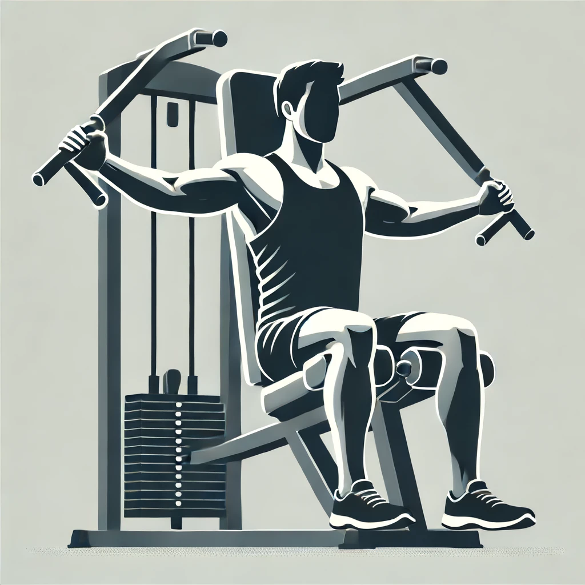
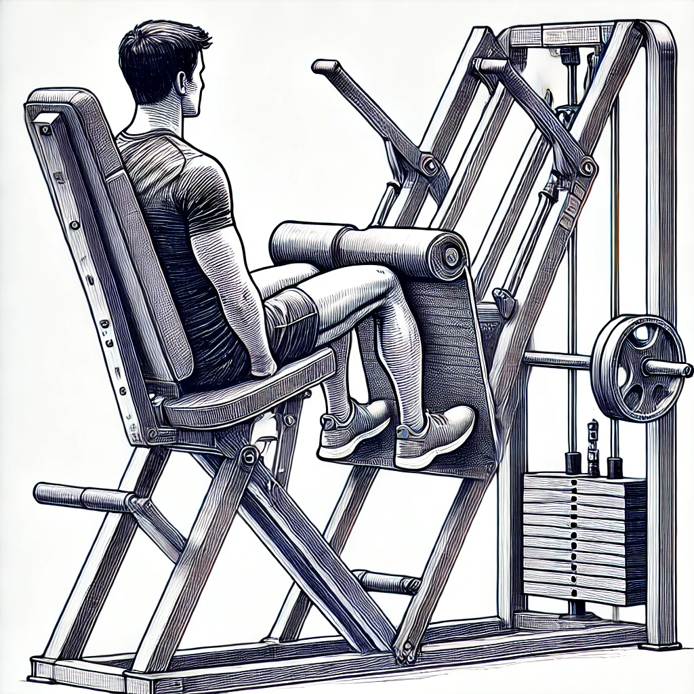
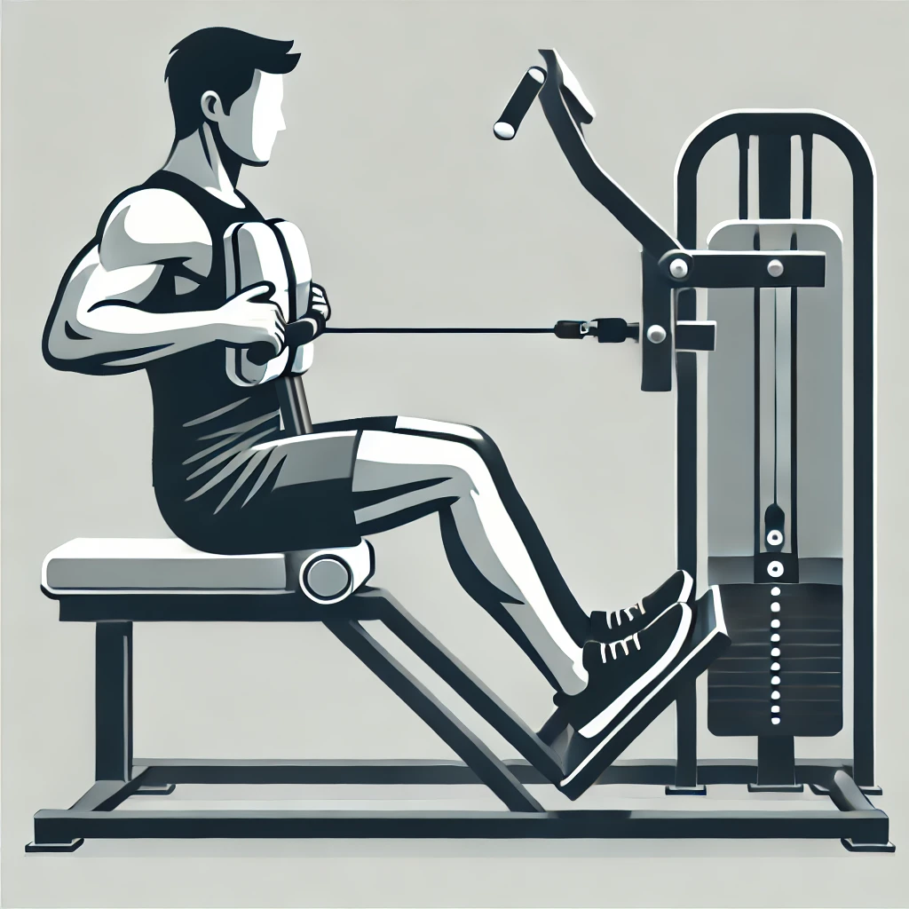

Bench Press - 1.webp

Inclined Bench Press - 2.webp
Declined Bench Press - 3.webp

Overhead Shoulder Press - 4.webp
Deadlift - 5.webp
Pec Fly Machine - 6.webp

Leg Extension Machine - 7.webp

Squat - 8.webp
Barbell Back Squat - 9.webp
Leg Press Machine - 10.webp
Lat Pulldown - 11.webp
Pull-Up - 12.webp

Seated Row - 13.webp
Bicep Curl - 14.webp
Tricep Overhead Extension - 15.webp
Leg Curl Machine - 16.webp

Lateral Raise - 17.webp
Front Raise - 18.webp

Calf Raise - 19.webp

Hammer Curl - 20.webp
Preacher Curl - 21.webp

Cable Tricep Pushdown - 22.webp

Chest Press Machine - 23.webp
Smith Machine Squat - 24.webp

T-Bar Row - 25.webp

Bent Over Row - 26.webp

Upright Row - 27.webp

Dumbbell Fly - 28.webp

Incline Dumbbell Press - 29.webp

Machine Shoulder Press - 30.webp
Reverse Pec Deck Fly - 31.webp

Cable Crossover - 32.webp

Seated Calf Raise - 33.webp

Standing Calf Raise - 34.webp

Romanian Deadlift - 35.webp

Glute Bridge - 36.webp

Hip Thrust - 37.webp

Cable Bicep Curl - 38.webp

Dumbbell Shoulder Press - 39.webp
Smith Machine Bench Press - 40.webp

Hack Squat - 41.webp

Reverse Lunge - 42.webp

Step-Up - 43.webp

Kettlebell Swing - 44.webp

Goblet Squat - 45.webp

Sumo Deadlift - 46.webp

Hip Abduction Machine - 47.webp

Hip Adduction Machine - 48.webp

Cable Face Pull - 49.webp
Incline Dumbbell Fly - 50.webp

Dips - 51.webp
Push-Up - 52.webp
Plank - 53.webp
Russian Twist - 54.webp

Hanging Leg Raise - 55.webp

Mountain Climbers - 56.webp

Burpees - 57.webp

Box Jump - 58.webp

Turkish Get-Up - 59.webp

Farmer's Walk - 60.webp

Snatch - 61.webp

Clean and Jerk - 62.webp

Battle Ropes - 63.webp

Crunch Machine - 64.webp
Chest Supported Row Machine - 65.webp

Barbell Row - 66.webp

Skull Crusher - 67.webp

Bulgarian Split Squat - 68.webp

Pallof Press - 69.webp

Hanging Knee Raise - 70.webp

Landmine Press - 71.webp

Landmine Row - 72.webp

Donkey Calf Raise - 73.webp

Jump Rope - 74.webp

Running - 75.webp

Cycling - 76.webp

Rowing Machine - 77.webp

Elliptical Trainer - 78.webp

High-Intensity Interval Training (HIIT) - 79.webp

Stair Climber - 80.webp

Aerobics - 81.webp

Dance Cardio - 82.webp

Shadow Boxing - 83.webp

Narrow Grip Lat Pulldown - 84.webp
Supinated Lat Pulldown - 85.webp
Cable Pullover - 86.webp
Dumbbell Pullover - 87.webp

Reverse Grip Bench Press - 88.webp

Cable Chest Press - 89.webp

Cable Front Raise - 90.webp

Cable Lateral Raise - 91.webp

Single-Arm Dumbbell Row - 92.webp

Dumbbell Shrug - 93.webp

Lying Leg Curl - 94.webp

Good Morning - 95.webp

Zercher Squat - 96.webp

Sissy Squat - 97.webp

Jefferson Deadlift - 98.webp

Cossack Squat - 99.webp

Dragon Flag - 100.webp

Hollow Body Hold - 101.webp

Reverse Crunch - 102.webp

Ab Wheel Rollout - 103.webp

Pike Push-Up - 104.webp